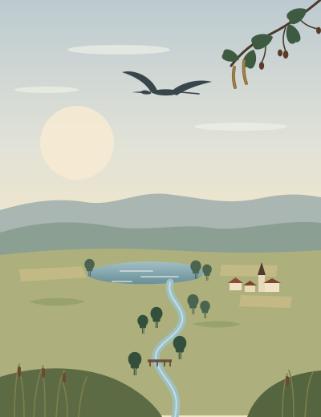

Erlenmark Chronik ab 1900
Eine fortlaufende Regionalgeschichte aus einem Transport-Fever-3-Spielstand. Sie folgt dem tatsächlichen Spielverlauf, Messung für Messung: wie die Orte zueinanderfinden und was sich dabei im Alltag verändert.
AusgangslageSpielzeit: 1. Januar 1900Erste Messung am 27.10.2026 (real)Unternehmen offen

Die Erlenmark um 1900
Belegt
Die Erlenmark misst innerhalb ihres Kartenrands 20,5 mal 41 Kilometer, rund 839 Quadratkilometer. Ihre Höhen reichen bis 484 Meter über den Wasserspiegel, gut ein Zehntel der Fläche liegt darunter. Die erste Messung am 1. Januar 1900 zählt 67 Städte mit deutschen Namen und zusammen 9.640 Einwohnern. Ahaus ist mit 409 die größte, es folgen Stendal (258), Drolshagen (256) und Rinteln (255); die kleinste, Emmelshausen, hat 60. Dazu kommen 64 Betriebe: 16 Bauernhöfe, 11 Ölplattformen, 10 Fischzuchten, 8 Lehmgruben, 6 Viehzuchtbetriebe, je 4 Holzfällerlager und Ölraffinerien, 3 Ziegeleien und 2 Sägewerke.
Erste Messung des Spielmonitors vom 1.1.1900, aufgenommen am 27.10.2026 um 05:37 Uhr Q4. Fläche und Klima (gemäßigt) laut Spielprotokoll Q3. Höhen und Wasserfläche aus dem groben Höhenraster (427 m).
Abgeleitet
Auf die Kartenfläche gerechnet kommt eine Stadt auf gut zwölfeinhalb Quadratkilometer. Lägen die Orte gleichmäßig verteilt, wären es von einem zum nächsten etwa dreieinhalb Kilometer, eine knappe Stunde Fußweg. Ahaus hat zum Start gut anderthalbmal so viele Einwohner wie die zweitgrößte Stadt. Unter den Betrieben stehen Rohstoffe und ihre erste Verarbeitung; Fabriken für Lebensmittel, Werkzeuge oder Kleidung fehlen in der ersten Messung.
Literarische Szene
Aus dem Feldbuch eines Landmessers
27. Dezember 1899. Frost seit der Nacht, endlich. Am Bach trägt der Boden jetzt, im Herbst gab er bis über die Stiefel nach. Die Erlen stehen dort in Gruppen zu dreien und vieren, jede Gruppe aus einem Stock gewachsen. Den Messpunkt habe ich an die dickste geschlagen und die Nummer eingeritzt. Wo das Messer die Rinde aufreißt, färbt sich das Holz orangerot.
28. Dezember. Mit dem Fuhrmann bis zur Furt. Er fährt die Strecke jede Woche. Bei Hochwasser, sagt er, nimmt er den Weg über die Höhe, drei Stunden statt einer. Ich trage beide Wege ein, den kurzen und den langen.
30. Dezember. Nachtquartier bei einem Bauern am Waldrand. Die Wiesen hinter dem Haus stehen bis in den März im Wasser, Heu gibt es zweimal im Jahr, wenn das Wetter mitspielt. Seine Frau fragt, wann die Karte fertig ist. Im Frühjahr, sage ich. Sie will wissen, ob ihr Hof darauf steht. Er steht darauf.
31. Dezember. Abends in der Wirtschaft. Am Nebentisch rechnen zwei Männer aus, was ein Wagen Holz bis in die Stadt kostet und was er dort bringt. Die Rechnung geht knapp auf, und sie bestellen noch ein Bier. Um Mitternacht läuten die Glocken im Ort, von weiter her eine zweite, kaum hörbar. Auf dem Heimweg liegt Nebel über den Wiesen. Die Laterne reicht drei Schritte weit.
So beginnt diese Chronik bei der Landschaft und ihren Zahlen. Name und Sitz des Unternehmens sind offen, ebenso die ersten Verbindungen. Was daraus wird, zeigt der Spielverlauf.
Gesicherte Ausgangsdaten
| Merkmal | Angabe | Grundlage |
|---|---|---|
| Welt | Erlenmark, eine erfundene Region mit deutschen Ortsnamen. Politische Einordnung offen. | Spieler, Protokoll |
| Spiel | Transport Fever 3 | Spieler |
| Spielstand | Datei „Erlenmark.sav“, gespeichert am 27.10.2026 um 05:37 Uhr. Derselbe Stand liegt auch als „Erlental.sav“ vor (05:38 Uhr). | Protokoll |
| Startjahr | 1900, erste Messung am 1. Januar 1900 | Einstellung, Messung |
| Karte | „Gigantomanisch“ (Größenstufe 8), Format 1 : 2, gemessener Kartenrand 20,5 × 41,0 km, Fläche rund 839 km² | Einstellung, Protokoll, Messung |
| Zufallswert | SpWJDQtUdp, auf der Einstellungsseite und im Protokoll gleich | Einstellung, Protokoll |
| Gelände | Regler: Seen vereinzelt · Flüsse normal · Berge normal. Gemessen: Höhen bis 484 m über dem Wasserspiegel, 10,5 % der Rasterfelder liegen darunter (Raster 427 m). | Einstellung, Messung |
| Klima | Gemäßigt | Protokoll |
| Ortsnamen | Deutsch | Einstellung, Protokoll |
| Städte- und Industriedichte | Mittel · Normal | Einstellung, Protokoll |
| Städte | 67, zusammen 9.640 Einwohner. Die größten: Ahaus 409, Stendal 258, Drolshagen 256 | Messung (Vorschau ebenfalls 67) |
| Industrien | 64: 16 Bauernhöfe, 11 Ölplattformen, 10 Fischzuchten, 8 Lehmgruben, 6 Viehzuchtbetriebe, 4 Holzfällerlager, 4 Ölraffinerien, 3 Ziegeleien, 2 Sägewerke | Messung (Vorschau ebenfalls 64) |
| Wetter und Tageszeit | Dynamisch · Kontinuierlich | Einstellung, Protokoll |
| Schwierigkeit | „Schwierig“; die Einzelwerte für Kosten und Erträge stehen im Protokoll | Einstellung, Protokoll |
| Mods | 46 aktiv, darunter „Spielmonitor – Live-Daten und Chronik“ (Rev. 20) und die Industriepakete „Electronics Pack“ (Rev. 2), „Sugar Cane Industry“ (Rev. 6) und „Toy Factory“ (Rev. 1) | Einstellung, Protokoll |
| Verkehr und Finanzen | Am 1.1.1900 vor dem ersten Bau: 0 Linien, 0 Fahrzeuge, Kontostand 0, Kredit 0 | Messung |
| Unternehmen | Name, Sitz und Gründung offen | offen |
| Erste Verbindungen | Offen | offen |
Einstellung: Screenshot „Neues Spiel – Einstellungen“, übergeben am 27.10.2026 Q1. Protokoll: Spielprotokoll von Transport Fever 3 vom 27.10.2026 Q3. Messung: Spielmonitor, Spielzeit 1.1.1900, aufgenommen am 27.10.2026 Q4. Spieler: Angaben im Gespräch vom 27.10.2026 Q2.
Was geschehen ist
Spielzeit ist das Datum in der Spielwelt, Aufnahme das reale Datum des Screenshots oder Exports. Einträge werden ergänzt und bei Bedarf mit einem sichtbaren Vermerk korrigiert; alte Fassungen bleiben stehen.
| Spielzeit | Ereignis | Art | Quelle |
|---|---|---|---|
Das Register wird aus data/events.json geladen … | |||
Die Erzählung
Das erste Kapitel folgt, sobald das Unternehmen fährt.
Die Kapitelgrenzen setzt der Spielverlauf. Ein neues Kapitel beginnt dort, wo sich im Netz, in der Wirtschaft oder im Alltag eines Ortes etwas Wesentliches ändert. Umwege und Verlustgeschäfte gehören dazu, ebenso Orte, in denen lange wenig geschieht.
Orte und Landschaft
Die Ortsnamen kommen aus dem Spiel; eigene Namen gelten, sobald der Spieler sie bestätigt hat. Lageangaben stammen allein aus Monitor-Messungen oder ausdrücklichen Angaben des Spielers.
| Ort | Lage | Wirtschaftliche Rolle | Wichtige Veränderungen |
|---|---|---|---|
| Das Verzeichnis wächst mit den Kapiteln. Die größten Städte zum Start stehen im Steckbrief. | |||
Landschaft
Belegt sind das grobe Höhenraster der ersten Messung, mit Höhen bis 484 Metern über dem Wasserspiegel und 10,5 Prozent der Rasterfelder darunter, und die Regler der Einstellungsseite: Seen vereinzelt, Flüsse und Berge normal. Wald, Namen und Ausdehnung einzelner Flüsse, Seen und Höhen bleiben offen, ebenso Himmels- und Fließrichtungen.
Das Unternehmen
- Name: offen
- Sitz und Gründungsort: offen
- Erste Tätigkeit: offen. Am 1.1.1900 vor dem ersten Bau: 0 Linien, 0 Fahrzeuge, Kontostand 0, Kredit 0
Zahlen, sobald sie tragen
Ausgangswerte am 1. Januar 1900
9.640 Einwohner
In 67 Städten. Ahaus 409, Stendal 258, Drolshagen 256, Rinteln 255; die kleinste Stadt, Emmelshausen, hat 60.
Vor dem ersten Bau
0 Linien, 0 Fahrzeuge. Linien, Fahrzeuge, Fahrgäste und Fracht folgen mit den Messungen; eine Momentaufnahme der Auslastung sagt wenig über die Rentabilität.
64 Betriebe
Bauernhöfe, Ölplattformen, Fischzuchten, Lehmgruben, Viehzucht, Holzfällerlager, Raffinerien, Ziegeleien und Sägewerke. Betriebe aus den Mod-Paketen fehlen in der ersten Messung.
Kontostand 0
Kredit 0 am 1.1.1900. Jahresbilanzen folgen aus der Finanztabelle des Spiels.
Offen und unbestätigt
- Unternehmen: Name, Sitz, Gründungsort und erste Verbindungen.
- Titel: „Chronik ab 1900“ ist ein Arbeitstitel.
- Spielstand: Die Welt liegt in zwei Dateien vom selben Spielstart, „Erlenmark.sav“ und „Erlental.sav“. Welche der Spieler weiterführt, ist offen.
- Mod-Betriebe: „Electronics Pack“, „Sugar Cane Industry“ und „Toy Factory“ sind aktiv. In der ersten Messung fehlen Betriebe aus diesen Paketen; ob und wann sie auftauchen, bleibt offen.
- Gelände: Die Regler für Seen, Flüsse und Berge kennt diese Chronik allein von der Einstellungsseite. Wald fehlt in den Messungen.
- Namen: Für Flüsse, Seen und Höhenzüge fehlen Namen.
- Politische Einordnung: bewusst offen. Reale historische Ereignisse bleiben außen vor.
Woher die Angaben stammen
- Q1 · Screenshot „Neues Spiel – Einstellungen“, Transport Fever 3. Übergeben am 27.10.2026, aufgenommen vor dem Klick auf „Spiel starten“. Zufallswert, Kartengröße und Mod-Zahl stimmen mit dem Spielprotokoll überein.
- Q2 · Angaben des Spielers im Gespräch vom 27.10.2026: Name „Erlenmark“, neue Welt für Spielmonitor und Chronik.
- Q3 · Spielprotokoll von Transport Fever 3 (stdout.txt), 27.10.2026, 05:23 bis 05:38 Uhr: Kartenvorschauen, Spielstart mit Zufallswert SpWJDQtUdp, aktive Mods, Einstellungen, Speicherungen. Eine Kopie liegt lokal beim Spielmonitor.
- Q4 · Spielmonitor, Welt „Erlenmark – 1900“, Weltkennung tf3-2026-10-27-1793075833-1414195950-2. Erste Messung zur Spielzeit 1.1.1900, aufgenommen am 27.10.2026 um 05:37 Uhr, mit Positionen und grobem Höhenraster.
Regeln dieser Chronik
- Einwohnerzahlen, Finanzwerte, Produktionsmengen, Eröffnungsdaten und Verbindungen stammen aus Messungen, Screenshots oder Angaben des Spielers. Was fehlt, bleibt offen.
- Erfundene Personen und Zitate stehen allein in literarischen Szenen; Belege sind Messungen, Screenshots und Angaben des Spielers.
- Vorgeschlagene Orts- und Unternehmensnamen gelten erst nach Bestätigung.
- Diese Chronik gehört zu einem eigenen Spielstand. Orte, Unternehmen und Ereignisse anderer Welten dieses Archivs bleiben dort.
- Widersprechen neue Daten früheren Angaben, steht die Korrektur unten mit Datum und Grund.
Korrekturen
Noch leer.